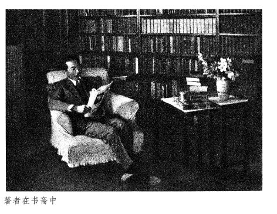

我任凭你们以为和这肖像（瓦乐敦的）相象。那么，我在街上，可以不给你们认识了。况且我不很在巴黎。我倒喜欢在棕榈树下。橄榄树下和稻子豆下，我也幸福的。柏树下面，不大幸福。枞树下面，就全不幸福了。我大概喜欢热天。
每半年，我刮了胡子，回到大街的麦罗尼来。约一个月，即使并无别人，我也快活。但是，没有比孤独更好的了。我最不愿意拿出去的是“我的意见”。一发议论，我在得胜之前，就完全不行。我有一个倾听别人的话的缺点……但我独自对着白纸的时候，就拿回了自己。所以我所挑选的，是与其言语，不如文章，与其新闻杂志，不如单行本，与其投时好的东西，不如艺术作品。我的时常逃到毕斯库拉和罗马，也是与其说是要赴意大利和菲洲去，倒是因为不愿留在巴黎。其实，我是厌恶出外的，最爱的是做事，最憎厌的是娱乐。
虽然这么说，我却并非憎恶人类的人，在以友谊为荣耀……但这是并不相同的。

纪德在中国，已经是一个较为熟识的名字了，但他的著作和关于他的评传，我看得极少极少。
每一个世界的文艺家，要中国现在的读者来看他的许多著作和大部的评传，我以为这是一种不看事实的要求。所以，作者的可靠的自叙和比较明白的画家和漫画家所作的肖像，是帮助读者想知道一个作家的大略的利器。
《描写自己》即由这一种意义上，译出来试试的。听说纪德的文章很难译，那么，这虽然不过一小篇，也还不知道怎么亵渎了作者了。至于这篇小品和画像的来源，则有石川涌的说明在，这里不赘。
文中的稻子豆，是Ceratonia siliqua，L. 的译名，这植物生在意大利，中国没有；瓦乐敦的原文，是Félix Vallotton。
（一九三四年十月十六日《译文》第一卷第二期所载。）